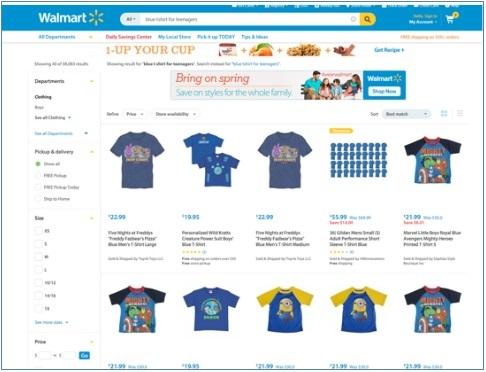
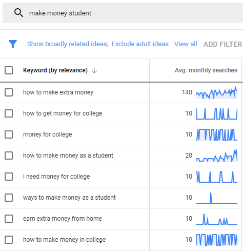
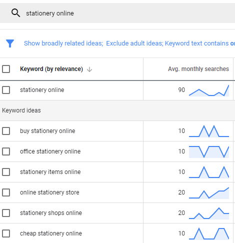
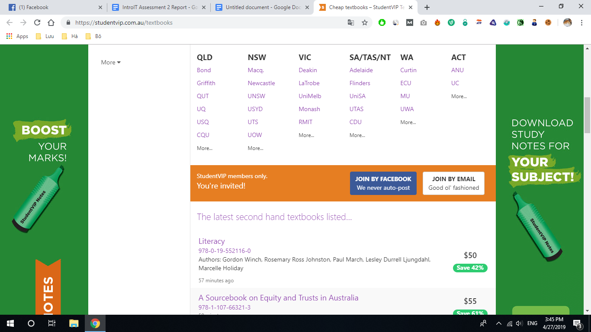
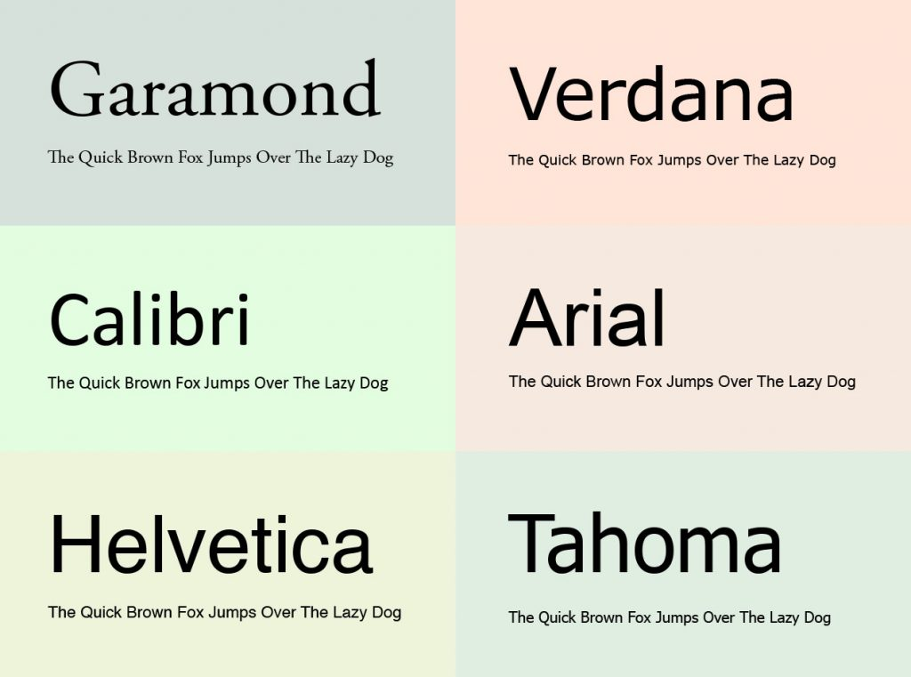

Introduction to IT
Assignment 2 - The IT World
Team Profile
A. Team name: Invincible
B.Personal Information
1. Doan Minh Chinh
Student ID: 3594281
Email: s3594281@rmit.edu.vn
He studies Bachelor of Management in RMIT University. He is an exchange student coming from RMIT Vietnam and he speak 2 language: Vietnamese and English. Chinh‘s hobbies is watch new movies, listening to music, researches about IT and plays video games. His interests in IT are very wide but he specially has interests in software development because he wants to know how software work and how to develop the excellent applications.
2. Pham Viet Nam
Student ID: 3557460
Email: s3557460@rmit.edu.vn
He studies Bachelor of Marketing in RMIT University. He has good experience in Digital Marketing field in his home country. About my interest, he can plays guitar, piano, organ, ukulele, Cajon, chess, Chinese chess, dance, soccer, volleyball, table tennis. As a Digital Marketer, he also pays attention to some parts of IT knowledge. They include data analysis, big data, website coding, mobile app, cyber security. he wish that he could be professional in all these fields, which will be useful for my job. But he now must focus more on Digital Marketing, which is his main career path.
3. Warren Cheah
Student ID: 3778714
Email: s3778714@student.rmit.edu.au
He is currently studying Bachelor of Information Technology at RMIT University. He is international student from Malaysia and can speak five different languages, there are English, Mandarin, Cantonese, Malay and a dialect Hakka. Learning all these languages isn’t that hard for me since I’ve been speaking them when he was young. English and Chinese (Mandarin) are the languages that required me work hard for me to improve my speaking and most importantly, listening and writing. The range of his interests in Information Technology is wide. he would just like to know anything about IT right now. For examples, he wants to know how some apps works, how do they function, what programs and codes are used in order to run it, how people or businesses uses technology in their workplaces or in their own times and so on. Basically, he is kind of interested in anything that is related to IT having said that, after 4 weeks of lectures and practicals, he personally find that programming is interesting even though it gets really complicated sometimes.
4. Amante Docherty
Student ID:3785537
Email:s3785537@student.rmit.edu.au
He is a first-year student at RMIT University studying Information Technology. he was born in Melbourne Australia and am currently living in Werribee with his Mum, Dad and his two younger sisters. Some of his hobbies include gaming, freestyle BMX, and watching such like YouTube or Netflix. Games that he like to play are mainly motorsport games like Assetto Corsa, Forza, Gran Turismo and Need for Speed. Other genres of games he like are fps, open world games and whatever he can play for free. In my spare time when he doesn't feel like playing games he like to watch YouTube and Netflix. YouTube videos that he like to watch are car related videos, gaming videos, vlogs, music videos and fashion/streetwear videos. His interest in IT is how it is now associated with many aspects of our lives and society, as well as the things that we can create with the help of IT. Another part of IT which he has an interest in is games, as they have been part of most of my life. A reason he have chosen IT is so that he can learn about what goes on behind the technology that people use daily. he find it fascinating that technology has created the world we are living in today and that the possibilities of it are endless. From when he was born to know technology has advanced greatly, providing new capabilities with appliances that were first created many years before. An example of this are mobile phones which are now able to take photos/videos, answer questions, give you directions, communicate with people from all around the world via text, voice or video, etc. His interest in IT is to be part of its growth and applications to make the world a better place.
5.Jake Farrugia
Student number: 3786398
Email: s3786398@student.rmit.edu.au
His Nationality is Australian, and he is studying Bachelor of IT in RMIT University. His mother language English. Interesting Fact (Hobbies): His hobbies include all kinds of technology, but he also quite enjoy movies and video games. His interest in IT is various and widespread, he has interest in a lot of different areas of IT, some of these areas include smartphones/tablets, Televisions, PC’s, Movies, and Video Games. His interest in these areas involve the technical specification and capabilities of these hardware but also how they work, and how to make these things work with the given hardware. His formal IT experience came in the form of work experience in a school’s IT department, where he learnt some basics about switches, network troubleshooting, sending in machines for repairs, or doing the repairs, as well as imaging. However, he has done some stuff personally such as set up home theatre systems, file servers, and maintain technology as well as consult with other people on their potential purchases.
C. Team Profile
1. Doan Minh Chinh: the first test is 16 personality show his personality is ESFJ-A. ESFJ is person who love to support friend and family, get up social assemble and try the best to make sure everyone is happy. With Education Planner test, he is tactile learner, he learns by touching and doing. He can remember things and understand problem by physical movement. He is a "hands-on" learner who prefers to touch, move, build, or draw what you learn, and you tend to learn better when some type of physical activity is involved. (Tactile)
2.Pham Viet Nam: Each of three tests above means different things about his personality. His MBTI test results that his personality is ESFJ-A. ESFJ is people who enjoy supporting their friends and loved ones, organizing social gatherings and doing their best to make sure everyone is happy. The Learning test describes him as a visual learner. A visual learner learns by reading or seeing pictures. he understand and remember things by sight. He can picture what he is learning in his head, and he learn best by using methods that are primarily visual. The result of Big Five Personality test reveals that he has positive emotions, has no fear. He is an extrovert and has high conscientiousness. These results reveal his behavior in a team, that he is an extrovert, easy to collaborate, and has positive emotions. In fact, he is often a leader at work, and he has cooperative leadership style. When forming a team, he should use his leadership strength, which is the ability of encouraging cooperation. This style is more appropriate for a team of new or unskillful members. On the other hand, if he form a team of experienced members, he should try to leave them more space, just give them direction, and let them find their own ways to finish their tasks. (Visual)
3. Warren Cheah: The results from all the 3 tests above shows that he is more like a quiet and observant person. It also shows that he sensitives to other emotion when making decision. This mean that he is more empathic and less competitive than Thinking types and focus on social harmony and cooperation. Besides that, the results show that he is a more assertive person and is resistant to stress. This could affect him in not worrying too much and not pushing myself too hard when it comes to achieving goals. he is also an easy-going person which he can easily agree to people ideas and thoughts, lacking self-thoughts. (Tactile)
4. Amante Docherty: From completing these tests is shows what his personality type is, his learning style and his ability to solve mechanical problems. The personality test that he attempted was from the 16 personalities website which declared his personality type as a defender. This indicates that he more of an introvert rather than an extravert and is observant rather than intuitive, meaning he is someone who is more comfortable with rational reasoning when making a decision and that he is not comfortable communicating with people. His learning style fit both tactile and visual meaning he learns best from doing and touching, and reading and seeing pictures. In a team his introvert trait may make it difficult to communicate effectively however his observant trait make it seem like he will be understanding with group decisions. When forming a team it is good for members to be friendly and for there to be a leader to guide and motivate him, and the group towards the end goal. (Tactile and visual)
5. Jake Farrugia: The results of these tests show to me that he is a visual learner, and that he is an observant person that likes to think about and observe a situation before he goes into it. It also shows that I’m an easy to get along with person. These results may influence his behavior in a team in that he am likely to observe the idea in action and think about the best way to go about the project is, but also that he can work well in a team because he get along with others easily. he can take these things into account when forming a team by observing what our project is but also by listening to the other team members to find the best solution for the project. (Visual
=>Two members (Chinh & Warren) are tactile learners and other two members (Viet Nam & Jake) are visual learner. Team members in group tend to be less competitive in thinking idea and need someone have leadership style to assemble ideas and decide which one will be the best. Teammates easily agree with the ideas and tend to work as a group to support each other to complete the project.
D. Ideal Jobs
1. Doan Minh Chinh: Junior Developer
2. Pham Viet Nam: Digital Marketing Manager or Marketing Executive
3. Warren Cheah: IT Architects
4. Amante Docherty: IT cyber security analyst
5. Jake Farrugia: Analyst Programmer/Engineer at NAB
Common elements: All ideal jobs require the IT background and have knowledge in programming language. The difference between each position is Chinh’s job requires a wide range of the programming field. Nam’s job is more relevant to marketing and communication skills. Analyst programmer is job about the analysis of data of the customers and the candidate works as coding, testing and design solution for each problem. Amante’s ideal jobs are in common with Jake because this jobs request collection and analysis of data, help and guide the implementation of new projects. The differences include working in privacy and protect company data and prevent trespasses, technical support. IT architect requires more duties than the others such as developing system demand, designing and maintaining computer network for organizations and business companies.

Tools
- Group Website: https://invincible2019.github.io/Invincible/
- Group's Git repositor: https://github.com/invincible2019/Invincible
Industry Data
1. What are the Job Titles for your group’s ideal jobs? How do each of these rank in terms of demand from employers?
Analyst Programmer/Engineer at NAB
Analyst Programmer. The roles of a programmer analyst is to design solutions related to technology for businesses and helping to set up those systems into place. During the design phase, programmer analyst will research and learn about the what the organization’s current systems and processes in order to implement changes into the it. After gathering information and resources, an analyst will propose the system design After gathering requirements, an analyst will propose a system design. Many analysts then write code for the system while others direct teams of programmers who are responsible for coding.
IT Cyber Security Analyst
Cyber security analysts evaluate, plan, and authorise security measures to help protect an organization against security infringements and attacks on its computer networks and systems. This is a job which involving imitating attacks to discover vulnerabilities, testing and running new software to help protect an organization’s data, and helping users attach to processes to keep the network safe. Cyber security analysts usually work in the IT department for different organizations and typically work a full-time schedule. This job is best suited to people with excellent knowledge of and experience using computers and software in security. People who enjoy critical thinking and love challenges will get the issues solved without too much effort.
IT Architect
The role of IT architect is to evaluate system demands, then uses professional skills to design and maintain computer network for organizations and business companies. Their duties include improving, maintaining and modifying current network systems. IT architects may act as manager and are responsible for solving IT related problems and issues. In the management roles, IT architects also have the opportunity to in- charge of the IT department in company and are responsible for scheduling and assessing budgetary necessity which may include estimating upgrade costs or switching Internet services.
Junior Developer
The Junior Software Developer is part of an active development team building and responsible for assisting the other members of the development team to develop internal applications. The Junior Software Developer is involved in all areas of development from design to development to testing. Their duties include developing internal databases and operating systems, integrating the database with the company websites, support and maintenance of existing systems. Junior developers also monitor the internal system's technical performance and some even assist the development manager in planning the overall strategy of the company.
Digital Marketing Manager or Marketing Executive
Digital Marketing Managers are responsible for planning and managing marketing campaigns promoting the brand, products and services of a company. They have a responsibility to plan campaigns, analyze metrics and identify trends. They typically have art direction and social media experience.
Job' titles ranked in term of demands from employers:
1. IT Architect
2. IT Cyber Security Analyst
3. Analyst Programmer
4. Junior developer( Web developer)
5. Digital Marketing Manager
The highest demand ideal jobs of our group base on the Burning Glass data is the IT architect jobs. IT Cyber Security Analyst and analyst programmer are both in high demand from the employers these few years even though the job titles did not exactly show on the data of Burning Glass. Junior developer is also one of the potential jobs depending on which area we choose to focus on more, for example net developer is on the third place out of the all the job listed. There is also front end developer, java developer, web developer and so on kind of jobs listed and each of the are ranked in different order. Digital marketing manager on the other is needed in a business or company in a different apartment.
2. From your group’s ideal jobs, you can identify a set of skills required for these jobs (we will refer to this as your group’s required skill set). These can be divided into general skills(communication, problem solving, writing etc) and IT-specific skills(Javascript, SQL, etc).
The set of generic skills that are required for our group’s ideal jobs are:
1. Communication skills
2. Problem solving
3. Organisation skills
4. Team collaboration
5. Troubleshooting
6. Planning
7. Researching and Creativity
8. Time Management
9. Meeting deadlines
10. Analytical skills
11. Leadership
12. Decision making
13. Presentation
The set of IT-specific skills that are required for our group’s ideal jobs are:
1.SQL
2.Javascript
3.Java
4.Microsoft Windows
5.Project management
6.SAP
7.Business Management
8.Business Analysis
9.Graphic Design
10.Technical Support
11.Microsoft C#
12.Linux
13.Customer Service
14.Software Engineering
15.Object oriented Programming
16.Website Production
17.Microsoft Office
18.ITIL
19.Python
20.Information systems
21.Business Process
22.Databases
● How do the IT-specific skills in your required skill set rank in terms of demand from employers?
Basics programming understandings are needed for all of the ideal jobs in our group. Higher and specific programming skills, for example, Javascript and SQL are required for some of the ideal jobs like programmers, IT architects and software developer. Majority of our group's ideal jobs involves working in a business or an organization. This means that basics on the working business process are required in order to fit into the workplace better. Project and business management skills will be needed when get promoted to a higher role in a business where managing other employees is also a part of their duties. Information systems skills are also one of the important skills on the list which almost all of the ideal jobs in the groups needed in which people interact with technology in support of business processes.
● How do the general skills in your required skill set rank in terms of demand from employers?
Mobile application and device management, UX Design, Cloud computing is the IT-specific skills which are not listed on our required skill set.p>
Mobile application is not safe. Mobile application management gives IT the ability to manage and secure only those apps that were specifically developed to work with a particular MAM product. It helps the employees in the company or business to complete their tasks with its own registered devices. For customers, it gives more values to them because most of the users prefer mobile apps to desktops since it is more easy to use and setup. The disadvantages of it is that the cost for the setup of the applications and the maintenance is high, so this skill is not necessary for our ideal jobs. Ux design is an important key in determining if the goals or objectives of a business can be achieved, so a company should have a UX professional to carry out the jobs. While for cloud computing, it’s not safe to have all the data of a business or an organisation to be stored on the internet because there is also a risk for cyberattack. Although most cloud providers have stringent security measures, as technology becomes more sophisticated, so do cyber attacks.
● What are the three highest ranked general skills which are not in your required skill set?
Positive Attitude, resilience, willingness to learn are the general skills which are not in our required skill set.
As a IT professional, challenges are all around us, in our daily life. Being resilience enables us to face all the difficult situations and also, further develop our coping skills. Having this ability is just about being able to change, ask for help then keep going. Having a positive attitude from employees mean that they are ready to do their best in completing their tasks no matter what situation that they are facing. Besides that, willingness to learn is also one of the essential skills that we need to have because we will only learn new things when we are keen on learning. Keep learning to enrich ourselves is one of the way that we can keep up with all the challenges that we face, then give solutions to them.
3.Having looked at the Burning Glass data, has your opinion of your ideal job changed? Why or why not?
Base on the Burning Glass data, our opinion of the ideal jobs has not changed. The ideal jobs of our group members are exactly the same or similar to those listed on the Burning Glass data. This shows that how demanding our ideal jobs are on a real world company. Having said that, these data gives us an insight of what types of skills that we need to develop now and then in order to be successful in our career. Generic skills like positive attitude, willingness to learn, and resilience are important regardless what our ideal jobs are. Skills like that can be brought up from now since they would definitely benefits us in the outside world.
IT Work
I.T professional 1: Cyber Security professional/security engineer
What kind of work is done by a Cyber Security professional/engineer?
Security engineers are I.T professionals who are assigned to protect computers and networks from possible cyber threats such as hackers or cyber-attacks. Tasks that a security engineer may have to attend to are analysing the systems and networks of an organisation to determine the most suitable security protocols for the business, create security standards for the organisation to follow, conduct regular checks for vulnerabilities in the organisations security, respond to security breaches, upgrading security measures regularly and provide solutions to prevent and resolve security breaches.
What kind of people do Cyber Security professionals/engineers interact with? Are they other IT professionals? Clients? Investors? The general public?
The kind of people that security engineers interact with are usually the bosses of organisations as well as the employees. This is to come to agreements with what security measures would suit the businesses budget and framework as well as changes that should be made to maintain the integrity of the business. Other people security engineers would interact with are the other employees of the business who should be informed of security protocols to ensure they do not create a vulnerability when using their personal computers or using the organisation network.
Where does the IT professional spend most of their time?
Security engineers spend most of their time in the office at their workplace where they interact with other colleagues to form solutions and share ideas for improvement when it comes to the business’ security, as well as work work from their laptops or computers coding and researching.
What aspect of their position is most challenging?
The aspect of being a cyber security engineer is keeping the motivation to continue to learn and enjoy working in the field. With the industry constantly changing and new threats emerging, security engineers must constantly be aware of new threats. Passion is another factor that may affect a security engineers ability during their time in the industry as the individuals behind the threats of organisation are both motivated by enjoyment and profit.
Source:
● https://www.youtube.com/watch?v=TvVfDJZ7Qcg
● CAREERS IN CYBERSECURITY- NEW ADVICE FROM DEF CON 24
● https://www.cybrary.it/2018/07/what-does-a-security-engineer-do/
● https://www.youtube.com/watch?v=-6ZbrfSRWKc
I.T professional 2: I.T support technician
What kind work is done by an I.T Support Technician?
An I.T support technician is a position which requires individuals to diagnosed and resolve problems, and help with maintaining computer infrastructure and web technology. The tasks that I.T support technicians may be required to undertake are installing and setting up computer hardware, software, systems, networks, printers and scanners, keep track of and maintain computer systems and networks, provide assistance with technical problems to clients or colleagues, react accordingly to requests and service disruptions within the company and upgrade or repair technical hardware and software.
What kind of people do I.T Support Technicians interact with? Are they other IT professionals? Clients? Investors? The general public?
The people that I.T support technicians interact with can include all the people within a business who's job position requires them to use computer systems or hardware. The interactions with these people would generally be about assistance with their computers or other hardware such as printers or scanners. As well as working primarily for one business, I.T support technicians can work as part of an I.T support firm which applies their knowledge to assist clients and businesses from a third party, either in person, or over voice or video.
Where do I.T Support Technicians spend most of their time?
I.T support technicians spend most of their time in the office providing assistance to their colleagues with computer and tech related problems, whether it is at their own desk or around the workplace.
What aspect of their position is most challenging?
The most challenging aspect of an I.T support technician is communication, as they must use terms that the clients would understand. As they are providing technical assistance, clients may have constraints of their own such as time which can make this work stressful, especially if it is a large task.
Source:
● https://www.youtube.com/watch?v=RYdmWa-i7Gs
● https://www.youtube.com/watch?v=26G-zm6pd8g
● https://www.seek.com.au/learning/careers/it-support-technician
● https://www.roberthalf.com.au/our-services/it-technology/help-desk-jobs
I.T professional 3: Software Engineer
What kind of work is done by a Software Engineer?
Some tasks that software engineers are typically required perform are determining how feasible software operations are, providing and presenting solutions using diagrams, diagrams, code comments, charts and documentation, updating and providing input on the operations of a business, preparing and applying solutions through constructing system standards and testing and improving products
What kind of people do Software Engineers interact with? Are they other IT professionals? Client? Investors? The general public?
Software engineers can have team meetings with other software engineers, bosses or CEO's to discuss the direction of the business and what the business aims to achieve and how they will achieve this goal.
Where does the IT professional spend most of their time?
Software engineers spend most of their time at their desk in their office building where they write code. However this may vary as some software engineers work from home, writing code/programming from their home study or desk.
What aspect of their position is most challenging?
An aspect of being a software engineer that is most challenging to some people is the amount of time and effort required to complete tasks as deadlines can be tight and some tasks require them to learn new things to complete them. Furthermore some tasks can prove to be too difficult for some individuals, such as debugging which cause large amounts of stress.
Source:
● https://www.youtube.com/watch?v=CxoGjX3JvHI
● https://www.youtube.com/watch?v=DFW8MwstRwY
● https://www.computersciencedegreehub.com/faq/what-is-a-software-engineer/
● https://woman.thenest.com/pros-cons-computer-software-engineer-7523.html
I.T professional 4: Web developer
What kind of work is done by a Web Developer?
A web developer is required to design, code and modify websites based on their clients specifications, as well as provide input to improve the functionality and aesthetic of the website. The general tasks that a web developer may be assigned include creating and editing websites, write code for websites, create plans in case a website fails, maintaining and improving websites and communicate with other people in the business to discuss their ideas to implement into the website
What kind of people does the IT professional interact with? Are they other IT professionals? Client? Investors? The general public?
Being a web developer can prompt interaction with colleagues from all around the business which can include UX, UI, web designers, programmers and other non IT professionals such as writers to discuss the designs, functions and layouts of the website they are working on. Web developers can also provide their skills to clients who are looking to create, maintain or edit their website.
Where does the IT professional spend most of their time?
This IT professional spends most of their time in their office as it requires them to communicate and work with other people within the business such as bosses, designers and other possible colleagues who are involved with the content and design of a website.
What aspect of their position is most challenging?
An aspect of the position of a web developer that is most challenging is balancing both work and outside life as work may need to be done at home to be completed on time. Furthermore this can prompt stress, if time is not managed efficiently between work and other activities at home. Work may also need to be taken home when the Web Developer does not understand the code and this then requires them to learn new aspects of coding and Web Development. This is evident through Chris Sean's video 'The Pros and Cons of Being a Web Developer' where he explains how coding has become a big part of his life as he must constantly learn and work on code outside of work.
Source: I.T professional 5: Cloud Architect What kind of work is done by a Cloud Architect? A Cloud Architect is an I.T professional who is responsible for how a business will decide to use /implement cloud computing. Some of the work that a Cloud Architect may be assigned are creating cloud implementation plans for how to adopt and build a cloud for the business, update and continuously improve their organisations cloud computing structure. What kind of people does the IT professional interact with? Are they other IT professionals? Client? Investors? The general public? The people that a cloud architect interact with include business CEOs, other IT professionals within the business such as support technicians, and third party suppliers. The CEOs/managers play a big role in the position of a Cloud Architect as the Cloud Architect must always communicate with the CEOs/managers about new projects, hardware, software and cloud technologies that they think will help the business and its cloud network. The cloud Architect must interact and negotiate with third party vendors when searching for new hardware, software and cloud technologies for the business to find a vendor best suited Where does the IT professional spend most of their time? From Holly Manly's blog, it reveals that as a Cloud Architect, most time is spent in the reading office, although the option to work from home is easily available. Meetings, hackathons and unconferences are held in a separate building located in London which is also frequently visited. What aspect of their position is most challenging? A challenging part of this position is that the cloud is always changing and needs to be updated to hold all the new information that the business stores there. Furthermore the cloud must be maintained as if it were to fail the whole business will be affected. This may put a lot of stress on the cloud architect to always maintain and upgrade the businesses cloud. Source:
● https://hiring.monster.com/employer-resources/job-description-templates/web-developer-job-description-sample/
● https://www.youtube.com/watch?v=CnjN5GZLgNc
● https://www.youtube.com/watch?v=8SIpMztZhwg
● https://www.roberthalf.com.au/our-services/it-technology/web-developer-jobs
● https://searchcloudcomputing.techtarget.com/definition/cloud-architect
● https://www.cio.com/article/3282794/what-is-a-cloud-architect-a-vital-role-for-success-in-the-cloud.html
● https://cloudblogs.microsoft.com/industry-blog/en-gb/beyourfuture/2019/03/21/a-day-in-the-life-of-a-cloud-solution-architect/
IT Technologies
Cybersecurity
What does it do?
In the cybersecurity world, the current state of the art technology for security involves high-bit encryption, end to end encryption, secure certificate verification and new technologies that allow more secure entry then say a password. Most secure https websites are encrypted in 256-bit encryption that is also verified from the browser end and shows the user all kinds of details about the encryption if requested, but also keeps it simple through a visible green lock or a red broken lock if it’s insecure. There is also end-to-end encryption for messaging apps, meaning messages are transferred and sent securely with little chance that it might be intercepted in the midst of transfer. Phones and other devices are testing new ways of securing entry to devices through ultrasonic fingerprint sensors or via face recognition, potentially combining with various other forms such as two factor authentication etc. WiFi has also been recently made more secure and fast in what is known as Wi-Fi 6 or 802.11ax, as the underlying technologies that connect the devices are being updated.
In the current time a lot of these things can already be seen via any normal web browser or through phones such as the Galaxy S10 or the face unlock on iPhone (or even older androids circa 2011, although that was rather a proof-of-concept and insecure), but whilst some of these technologies are fuzzy, Galaxy S10 got fooled by a 3D printed finger, but face ID got fooled by a printed photo of a face or even a sibling. In the current time, security is gathering more of a concern through software updates and testing and most people are using the almost latest iOS software, and thanks to Windows 10 automatic updates, most people’s operating systems are up to date, patching out known security vulnerabilities that could be exploited. Android devices are slight bit more hit and miss depending on phone brand but most devices are Lollipop 5.0 and above, with most on nougat 7.0 then marshmallow 6.0 as more devices take updates seriously.
Within the next three years, we should see WiFi 6 be more widely spread and implemented as well as more people buying these devices that are compatible, securing there wireless connection to their router more thoroughly. We will also see more systems being updated and kept up to date as software updates continue to gain traction and importance, especially as more and more machines move to Windows 10, and with each succeeding version of android getting adopted faster, and more and more devices still getting updated as time goes on, Google also implementing more standards for updates as to allow manufactures to get these new updates to work on earlier and also moving key features to be updated via Google Play Store, so that even devices that don’t get manufacturer updates can still be secured from bugs, thus reducing the level of security threats in the future. Websites may use new encryption methods or even use 512-bit encryption, and ideally the ultrasonic fingerprint and face id scanners will improve as time goes on.
WiFi 6 has been worked on for a while, and was made possible through the development of MU-MIMO, or multi user, multi in multi out, allowing numerous users to all gain information at the same time vs the original FIFO system, where first come was first served. The free giveaway of Windows 10, along with the continuing support of Windows 10 along with only supporting new things on Windows 10 means that more and more devices are going to Windows 10, and with most being on forced updates, most devices will be a lot more secure, along with support deadlines and more legacy systems may also be upgraded soon as Windows 7 is soon to reach end of support in January 2020. Android has gotten better as overall technology specs changes has slowed but also more and more companies have noticed that updates are a big selling feature, so more and more companies have been making updates, coupled with the fact that google has started to release developer builds of the latest android versions earlier then before allowing more testing time but also more time for other manufacturers to build updates for their devices. Google has also started to experiment with releasing more core updates through the Google Play Store as opposed to leaving it to manufacturers. Google has also worked on making the operating system a bit more flexible in the form of Project Treble so that the operating system part no longer needs to contain the drivers part as it will have its own section, allowing for the most part easier updates.
What is the likely impact?
The potential impact of the further development of Cybersecurity is that more and more devices will be secured and up to date, meaning that less exploits and vulnerabilities will be able to be used. It also means that people's connections will be more secure, even wirelessly, and that their transmissions through to websites will be secured thoroughly through 256 bit encryption, or even 512 bit encryption, thus allowing more secure data transfer, and a more secure system.
For Cybersecurity, the things that are likely to change are how websites are encrypted as more and more will move onto higher-bit encryption or better secure layer technologies, wireless internet connectivity thanks to WiFi 6. Android systems being more up to date then before thanks to the efforts of Google and other manufacturers. Also how people utilise their devices as now some devices will automatically update certain things and cause reboots meaning more adaption of the updating schedule but also people around the updates will be needed.
Most common users will be effected in that updates will self-install and restart, potentially when doing something important, until these self-updating schedules improve. Also a more considered focus on the next set of devices they buy as to ensure it will get updates and is secure. It will also fix those that maintain and run servers as they will have to implement the newer higher security measures, but also ensure that there servers are secure and that updates don’t cause downtime.
These technologies will most likely not replace or make any current jobs or technologies redundant, however there may be more jobs in developing updates support for devices and / or fixing encryption on servers, as it will need more people to develop for more platforms and thus to support all those devices they will need to create more jobs for people, to ensure that each update can maintain a set quality level, rather then stretch their workforce, to support more than they can handle.
How will this affect you?
These developments will affect us and our daily lives as we will have to adapt to more updates and setting update schedules to avoid reboots during important work, it will also affect device decisions as to a more conscious one about updates and longevity of support for software updates as well as ease of custom rom or making your update when it comes to Android, so that devices may still be updated after manufactures give up. It may also mean ensuring that the device is secure as it may be running all the latest update out of the box. This will also affect people unknowingly as more websites increase their security and protections in terms of HTTPS etc. meaning the transmission is more secure between the user and the site.
What will be different for the user will be more updates for more devices, as well as more automatic reboots during use to install said updates. Also ensuring that a device manufactures history in updates Is good in that they update regularly and continue to support their devices rather than just release and drop support almost simultaneously. Other differences will be setting up devices as more and more have fingerprint scanners etc. so to ensure that we use them alongside stronger passwords than 4 or 6 numerical digits. It will also be different in that websites will be more secure and thus there will be more sites where you see the padlock and https.
These changes will affect people's family and friends as more and more people will take security of their devices more seriously, especially as you can now use your phone as a bank card. It will also mean people will more seriously consider the devices they are buying and also as the market shifts to more security consciousness, it means more manufactures will begin to continuously update as well as have a lot of security features meaning these newer devices will be better suited and even cheaper ones will also aim to be more secure as now they will have to. It may also affect family as if a device automatically reboots on them to update they may get annoyed as they were doing something important, and thus updates should get smarter and recognise whether work is being doing or if the computer is idle.
Autonomous Vehicles
What does it do?
The state of the art of autonomous vehicle technology is self-driving cars made by Tesla and other manufactures, and are currently being experimented upon, a self-driving car, as the name suggests, is a car that drives itself, parks itself, and all you need to do is set your destination. This is a very interesting technology that continues to develop and evolve as more technologies and research is conducted to find and improve this technology to make it more suitable for mass production and widespread sales and use by normal consumers who purchase vehicles. It also is allowing for technologies like park-assist or automatic braking to go into cars that are on the market today, allowing for people to experience this autonomous vehicle technology first hand, and also with their current cars rather than having to wait to it is all done in the form of the complete self driving car.
In terms of autonomous vehicle technology, what can currently be done depends on the whether you are a user or manufacturer, as if you are a user or consumer then you can experience only some of these technologies in the form of automatic braking if you get too close to a car, or lane adjustment ensuring you stay within your lane and not accidently go too far into the other lane, or even park assist, which can almost park the car itself. Even cruise control to maintain your speed. However, with all these benefits, you still cannot use the self-driving feature as that is not available to most consumers as it isn’t ready yet. If you are a manufacturer however, you have access to all the consumer does, but also self-driving prototypes that can drive the car themselves utilising all the above mentioned technologies and more, and can use these prototypes to further research and improve the technology.
With autonomous vehicles, what is likely to be able to be done soon within the next three years could range from improved technologies that are already in the car for the consumer to make them more effective, reliable or robust, or potentially even more technologies being integrated as the self-driving car gets more and more ready for the mainstream and getting people used to all the technologies that these vehicles can bring to the main population. Self-driving cars will become more ready and reliable as the algorithms and technologies mature and are more widely understood and technological capability increases and costs go down to make it more realistically widespread as the cost is currently quite high to mass produce and thus the costs of the technology will have to go down in order to manufacture the cars in mass as to allow the majority of consumers to buy them but also to afford them.
The technological and other developments that made these self-driving autonomous vehicles possible are stuff that is currently available to the masses, such as cruise control to maintain the vehicle speed with little input, lane technology to ensure you don’t accidently merge into another lane when there is a car coming, automatic braking if you get too close to the car in front of you, or park assist, where the car almost parks itself. All these technologies can already be seen in today’s mass produced vehicles and pave the way to the self-driving car that will only need your destination and will drive and do everything itself. Other developments that helped is the GPS to provide location to and from the destination and ensure all the routes are correct and can keep track of where the vehicle is at all times. Another development is smartphones as it allowed the technology to be made much, much smaller then it would otherwise be along with wireless internet to ensure the cars can be connected to get map data etc.
What is the likely impact?
The potential impact of the development of self-driving vehicles are that more and more cars will be outfitted with the new technologies in the lead up to the mass release of these self-driving vehicles, which means learning how to drive will be different for these people and also may in the far future mean that people won’t know how to drive or will make the process of learning to drive redundant and unnecessary in the long run.
What is likely to change for consumers with self-driving cars are the technologies that are available in their car as they get better, more effective and in the mainstream meaning more and more people will have access to these cars, meaning more people may get used to the idea of self-driving vehicles or at least some of the underlying technologies that make the self driving car possible. Consumers may also have less control of their vehicle as time goes on as more and more goes to self-driving technology
The majority of people will be affected by self driving cars as more and more of its technologies find its way to the mainstream as previous technologies of park assist, cruise control and automatic braking have. People will be affected as more and more cars will take more control of travelling and thus become more autonomous and require less and less interaction from the human and can handle more and more of the driving tasks itself.
This technology may replace and make redundant jobs such as taxi and uber drivers as well as truck and delivery drivers as these sorts of tasks could also be taken over by an automatic self driving car as the car will be able to take itself to and from the destinations that it needs to go to, but will create jobs in that it will make jobs for research and development of the cars as well as those who have to make the technologies, along with testers, and more people to be able to fix said technologies, and those who integrate the technology into the vehicles etc.
How will this affect you?
These self-driving cars will affect us and our daily lives as more and more of the self-driving technologies make way into our vehicles, such as lane technology to ensure you don’t accidently merge into another lane, automatic braking if you get too close to the car in front of you, or park assist, where the car almost parks itself. These technologies will affect our cars and how we drive them as we will have more feedback from the car then ever before. It will also affect us when self-driving cars do come out at first as some cars will still be human driven and others autonomous thus it will be an interesting situation to see and ideally ensure that these can happen and they can co-exist
What would be different due to self-driving cars is numerous, as a start the cars will be different as they can drive themselves, and also traffic as now there should be less accidents or abrupt changes, along with mass communication between cars ensures that every vehicle knows not only where each other is but also what they are doing along with speeds being maintained and all being the same. This may also allow higher speed limits as self-driving cars will remove a lot of the human error that cause accidents in our current time and thus be safer especially in the long run.
The changes due to self-driving cars may affect our family and friends as rather then other humans control the car or they themselves controlling the car, it will be instead that the car will control itself allowing for less of the human error that cause accidents but also meaning that people may forgot how to drive in the distant future and also make current processes such as learning to drive redundant as the car will drive itself. Additionally, as the car controls itself it means that there should be less accidents or abrupt changes and that speed limits may in fact go higher, meaning we may get to destinations faster than ever before.
Raspberry Pi
What does it do?
The current state of the art for Raspberry Pi is the Raspberry Pi 3 Model B+ as it features a 1.4GHz x64 Bit processor and also has dual band WiFi, Bluetooth 4.2, 100Mbps ethernet that it can also be powered through, along with a micro usb slot and hdmi for video output. It also has 1 GB of RAM, and a microsd slot along with 4 full size usb 2 slots. All this is powered over 5V/2.5A which is minimal power. With these devices we are able to run minimal servers, playback media, run some older games from older consoles through emulation, do web browsing and many other things that you could do on your smartphone more or less, but in a much cheaper and smaller form factor at around $50 in most retailers, allowing for almost everyone to gain access to and operate a Raspberry Pi and create whatever their heart desires
What can currently be done with a Raspberry Pi is media playback of numerous file types, being able to be a small $50 media player thanks to its HDMI output, it can also emulate older generation console games or have PC ports for older games, allowing for a very small and compact games console that is cheaper and akin to a NES or SNES classic, that is much more versatile as it allows for more controllers and different types of controllers and allows them all to connect via a common usb port standard rather than proprietary connections. A raspberry pi could also be used as a small personal computer as you could run linux on it allowing for basic tasks such as text editing and web browsing to be done, Windows 10 IOT can also run on the Raspberry Pi making it a very versatile device for $50 in most stores.
What is likely to be able to be done soon or within the next 3 years with a Raspberry Pi is rather numerous, because as smartphone technology advances, it means the lower end components, even though they are more powerful than the raspberry pi, will go down in price as newer parts take its place, thus allowing the raspberry pi to get more powerful without getting more costly, meaning it will become more capable of things as its power increases, and especially since things get more power efficient it will allow the raspberry pi not to take too much power, yet still yield great and high results, also allowing for potentially newer ‘mini’ consoles to be made as the parts that can handle the emulation become cheaper, thus Raspberry Pi is a very useful tool, as some people even make miniature laptops or small computers out of them to use, or even may be able to port more advanced PC games (~ 2004) as the power increases.
The technological and other developments that made the Raspberry Pi possible are primarily smartphones as they allowed for the components of the raspberry pi to be miniaturised to their current point, but also brought the demand for these components to be this powerful. It also contributes as it allows the price of older but still good components to go down as smartphones gain more and more powerful components and technologies and pave the way for research and development into these technologies that make the Raspberry Pi possible. Also the primary charging port was micro usb, meaning that heaps of people will already have numerous cables that will work with the Raspberry Pi and also a ‘charger’ that potentially could power the raspberry pi. Micro SD’s are another development that allowed the Raspberry Pi to work as it allows all the data to be stored in a small form factor and due to their widespread- edness, yet again the price is able to be low to acquire for high capacities such as 64GB.
What is the likely impact?
The potential impact of the development of the Raspberry Pi is that more and more people will be able to access and utilise it as well as it gathering more power in hardware allowing for it to be used for more potential applications, whether it improves its current use-cases or even allows for new functional applications, it will also means more people will hear about the Raspberry Pi as time goes on as the value increases
What is likely to change thanks to the Raspberry Pi is that more and more people will potentially become interested in making small devices that can do a whole lot or even run small servers or controls that utilise the Raspberry Pi, allowing peoples live to become easier in some regard but also meaning that people can spend less on certain devices or use their existent device to do so much more as it isn’t limited to one function like other devices are.
The people to be affected by the Raspberry Pi are almost everyone in a way, as anyone can use the raspberry pi for any reason they can think of, whether they want a basic computing machine for web browsing and text editing, want a media playback device, or even a very small portable game console that can run a range of older games, catering to everyone's potential interests and could even operate small servers to host files or small multiplayer games and such making it a very versatile hardware for the cost of $50.
The Raspberry Pi shouldn’t replace or make redundant jobs, nor probably create them as the Raspberry Pi is more for hobbyists and those that like to tinker, it may assist or take away some of the workload but it would probably not affect jobs as we know it, but it will allow people to gain skills in using it and loading it with programs that may help them gain skills that in future industry’s they may be able to use.
How will this affect you?
The Raspberry Pi can affect our daily lives as we may use it daily as small computing machine, or to watch some media or Netflix, or maybe even play a few game on it, it could affect our lives in any way we let it as we can make it do many, many things and it can assist in whatever way you make it, thus allowing the user to have a device that could take on many different tasks fluently, as it could even make a small NAS server for you to access files around the house at a fraction of the cost.
What would be different thanks to the Raspberry Pi would be the cost of things such as ‘mini’ consoles as thanks to this concept it has allowed other manufactures to make similar boards that are then used for these consoles that people buy, but it also allows people to make their own, thanks to the Raspberry Pi it also means these technologies are available cheaply as the technology is already existent and manufactured and would require little change when being made for something else as the groundwork is already laid. It will also be different as rather then building a small computer you may be able to get away with a raspberry pi instead, lowering your costs.
These changes could affect family and friends as more and more people learn about and go to use the raspberry pi for particular applications as they will gather interest and potentially they may even use it within their own home for any of the aforementioned things, and allows for cool experimentation and tinkering, and also a cheap way to do so, and even a cheap way to entertain people as you could watch videos or play games on the same device, given the micro SD has enough storage for it all, and if not it can easily be replaced with a higher capacity one
Machine Learning
What does it do?

Machine learning, also known as Analytics 3.0, is the latest development in the field of data analytics. Machine learning allows computers to take in large amounts of data, process it, and teach themselves new skills using that input. It’s a way to achieve artificial intelligence, or AI, using a “learn by doing” process.
Machine learning enables computers to learn and act without being explicitly programmed. It evolves from the study of pattern recognition and the design and analysis of algorithms to enable learning from data and make possible data-driven predictions or decisions. (Source: https://www.protiviti.com/US-en/insights/effects-machine-learning)
 Machine learning process
Machine learning processWhat is the likely impact?
There are many ways artificial intelligence and machine learning will impact your everyday life. Here is the list of 15 things machine learning will affect: intelligent gaming, self-driving cars and automated transportation, cyborg technology, taking over dangerous jobs, environmental protection, digital empathy and robots as friends, improved elder care, enhanced health care, innovations in banking, personalized digital media, home security and smart homes, streamlined logistics and distribution, digital personal assistants, brick and mortar and AI, customized news and market reports.
Each of these things above contributes a huge benefit for humanity. For example about banking, Using location data and purchase patterns, AI can also help banks and credit issuers identify fraudulent behavior while it is happening. These machine learning based anomaly detection models monitor transaction requests. They can spot patterns in your transactions and alert users to suspicious activity. (Source: https://elitedatascience.com/machine-learning-impact)
 Fraud detection in banking
Fraud detection in bankingHow it affects our projects (e-commerce website)
Machine learning can improve ecommerce search results every time a customer shops on the website, taking into account personal preferences and purchase history.
Instead of using traditional search methods like keyword matching, machine learning can generate a search ranking based on relevance for that particular user.
This is especially important for giants such as eBay. With over 800 million items listed, the retailer is taking full advantage of artificial intelligence and data to predict and display the most relevant search results. (Source: https://www.disruptiveadvertising.com/ppc/ecommerce/machine-learning-ecommerce/)
Machine learning in e-commerce website
Project Idea
Purpose, customer, product
Our group's project idea is to build an e-commerce website for students to buy and sell things in Melbourne. The purpose of this website is to become an e-commerce marketplace that connects sellers and buyers. The reason we choose this project as the group's assignment is that two of us already wrote about website for the first assignment. We are also curious about how to build an e-commerce website from scratch. E-commerce website is a very good way to learn to be a website developer. So if we really run the project, how long should it take? It could be just a week, since people can design, build and launch a standard ecommerce website in short time. However, if we want to take the project as a long-term business, the website may take up to months to build.
Many students have the need of making money, while others have the need of buying stationery online, fast, with a lower price. The need is arising. Many young people are interested in making money online, and it is more convenient for students to buy things online. In the data extracted from Google search engine, there are a number of monthly volume search for related keywords which are searched particularly in Melbourne city. To solve this need, we decide to build an online marketplace for students to buy and sell things in the city. That is why this ecommerce website's idea was born.
Example keywords about “make money as a student” and their average monthly volume search in Melbourne
Example keywords about “buying stationery online” and their average monthly volume search in Melbourne
Customer audience is students aging from 15 to 25. The number of potential customers is around 600,000 (Source: https://profile.id.com.au/australia/five-year-age-groups?WebID=260). That is the demography. About the psychology and behavior, students usually share things that they find interesting. When they can sell things online and make real money, we should encourage them to share with their friends, which is one of the functions we should build on the website.
To have a clear description about the product, this e-commerce website enables users to buy and sell a wide gamut of materials: paper and office supplies, writing implements, greeting cards, glue, pencil cases and other similar items.
To illustrate the website, here are two other websites that have similar ideas: https://studentvip.com.au/textbooks and https://www.coop.com.au/sell-textbooks. They are e-commerce websites which enable students to buy and sell books online. However, there are still no websites for stationery, no direct and dominating competitor.
An example website
Project Description
E-commerce websites are online portals that facilitate online transactions of goods and services through means of the transfer of information and funds over the Internet. When we set up an e-commerce website, there are many elements that we have to pay attention to, which are described as follows:
Platform
There is a list of best platforms to build an e-commerce website: Wix, SiteBuilder, BigCommerce, Shopify, Volusion, Squarespace, Magento, OpenCart, etc. To choose among them, we must also consider about their content management system (CMS).
 E-commerce platform
E-commerce platformCoding
To build a professional e-commerce website, we have to combine both front-end and back-end development. While front-end is the visible parts of a website, back-end is the “under the hood” databases and infrastructure. Front-end languages include HTML, CSS, and Javascript. Back-end languages focus on Java, PHP, Ruby on Rails, Python, and .Net.
 Front-end versus back-end
Front-end versus back-endSitemap
Put simply, a sitemap is a map of your site’s contents. Customers will probably never find your sitemap useful, but to search engines, it is one of the most useful components in existence. Its purpose is to help search engines index your site. (Source: https://moqups.com/create//img/content/diagrams/site-maps/ecommerce-shop-sitemap-template.png)
 E-commerce website sitemap
E-commerce website sitemapDatabase
Most e-commerce databases use a similar design with 4 basic tables. There may be other ancillary tables to support things like shipping, taxes, categories for searching, etc. But no one wants to miss these four core tables.
● Customers Table - holds customer information like address, shipping address, billing address, etc.
● Products Table - holds product information like product name, description, size, color, unit price, etc.
● Orders Table - holds information on when an order was placed including Customer ID, date of order, order shipping date, etc.
● Order Details Table - holds information on each product ordered on one order (since typically customers can purchase multiple items on the same order) including the product ordered, quantity, unit price, any discounts, etc. (Source: https://www.princeton.edu/~rcurtis/ultradev/ecommdatabase.html)
 E-commerce website database design
E-commerce website database designDesign shopping cart
Shopping cart abandonment is one of the biggest problems for many e-commerce sites. It causes online retailers a great deal of pain. So we have to design our e-commerce site in such a way that can reduce our abandonment rates.
● Empty shopping cart design: It can provide shopping instructions, recommendation and a call to action that entices users to do so.
● Full page cart and mini shopping cart: It will help shoppers keep track of how much they spend and what they buy. We can also provide a link in the mini cart to view the full page cart instead of taking the user directly to checkout. (Source: https://www.23digital.com.au/e-commerce-web-design-a-guide-to-shopping-cart-page-design/)
 Mini shopping cart design
Mini shopping cart designUI/UX
UI/UX is the design of any user interfaces, in which usability is just as important as the appearance. Here is the list of UI/UX elements: button, menu, icon, form, tab bar, dropdown, input field, loader, notification, etc. (Source: https://careerfoundry.com/en/blog/ui-design/ui-element-glossary/)

Font
Web fonts are a CSS feature that allows you to specify font files to be downloaded along with your website as it is accessed, meaning that any browser that supports web fonts can have exactly the fonts you specify available to it. List of best website fonts: https://websitesetup.org/web-safe-fonts-html-css/
Some popular website fonts
Responsive web design
Responsive web design (RWD) is a web development approach that creates dynamic changes to the appearance of a website, depending on the screen size and orientation of the device being used to view it. RWD is one approach to the problem of designing for the multitude of devices available to customers, ranging from tiny phones to huge desktop monitors. (Source: https://www.nngroup.com/articles/responsive-web-design-definition/)